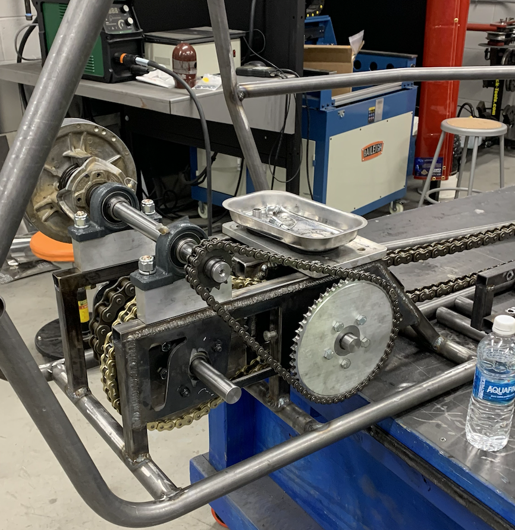

This is my most important project and most proud project I have worked on in my career. I was a part of designing and fabricating the seat mounting system and the driver restraint devices. However, more importantly, I was apart of helping design the drive train system for the Quinnipiac University baja car. While the senior design team did most of the work. I helped file out a few of the details required to make sure everything ran smoothly.
